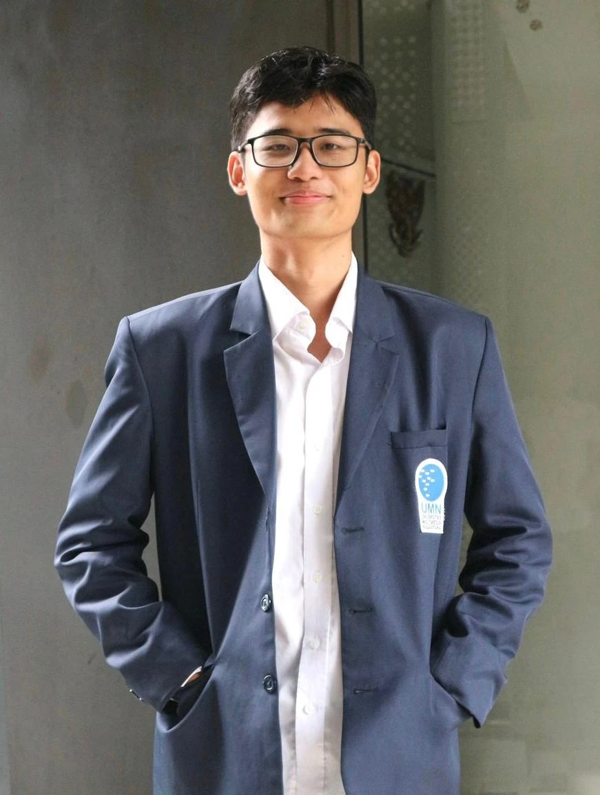
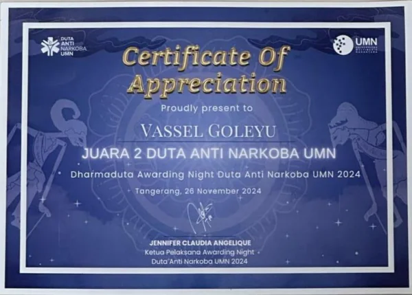
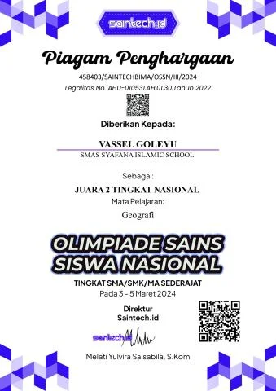
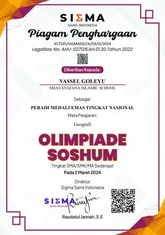
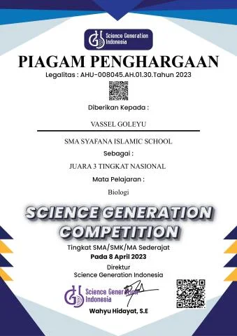
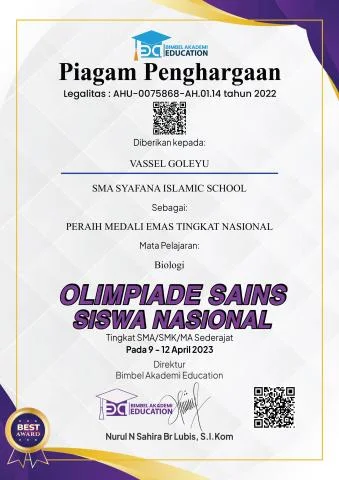
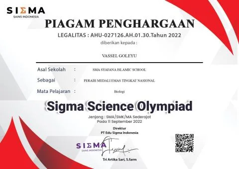

Vassel Goleyu
Portfolio
Website
Informatics student · Full-stack developer

02 / People & purpose
My experience.
Leadership / Jan 2026 — Present
Supervisor, Mister & Miss UMN
BEM UMN
Designed the annual theme and supervised executive committees so programs stayed aligned with the Grand Design, student values, and campus regulations.
- Program direction
- Supervision
- Event concept
Leadership / Jan — Dec 2025
President
Duta Anti Narkoba UMN
Led health advocacy, school outreach, donation drives, blood donation activities, and Anti-Narkoba Week with campus and community partners.
- Leadership
- Advocacy
- Community outreach
Technology / Feb — Dec 2025
Full Stack Web Developer
UMN Medical Center
Developed responsive Laravel applications, connected REST APIs and MySQL data, and implemented secure authentication and authorization.
Health / Feb — Dec 2025
Health Center Staff
UMN Medical Center
Supported daily patient care, organized records, coordinated with healthcare providers, and shared preventive health education across campus.
- Patient care
- Health education
- Records
Events / Mar — Jul 2025
Event Organizer & MC
UMN English Student Council
Designed Scrabble, Speech, and Debate competitions for UNITY 2025 and served as an English-language semi-formal MC.
- Event coordination
- Public speaking
- MC
Events / May — Nov 2025
Event Organizer
HMIF UMN · Byte 2025
Managed Horizon, Fuse, and Infinite programs, coordinating flow and logistics for exhibitions, competitions, and the interactive finale.
- Program management
- Logistics
- Student events
Events / Jul — Aug 2025
Liaison Officer
Garuda Hacks
Guided participants through the UMN venue, explained schedules and rules, and acted as an approachable information point throughout the event.
- Participant support
- Communication
- Coordination
Health / Mar — Sep 2025
Medical Staff
OMB UMN 2025
Supported campus orientation as part of the medical staff team, helping keep participants cared for during a large student program.
Events / Feb — Oct 2025
Academic Division
ISFEST UMN 2025 · HIMSI UMN
Helped organize academic competitions, prepare guidelines and learning materials, and coordinate with judges.
- Academic competitions
- Learning materials
- Coordination
Events / Sep — Nov 2024
Event Division
Infinite · HMIF UMN
Facilitated activities for around 500 students, managed timelines, and developed six interactive games for participant engagement.
- Event planning
- Interactive activities
- Timeline
03 / A little about me
I love
technology
and science.
An Informatics student at Universitas Multimedia Nusantara, building useful digital experiences and bringing people together through student leadership and community care.
I build for the web and care about the little design details. My curiosity also extends to PLC and automation.
Meet me on GitHub ↗
Things I build with
- Node.js
- TypeScript
- React
- Docker
- Kotlin
- Unity
- TensorFlow
04 / Milestones
Always learning.
Leadership, science, language, and a little curiosity.

2024
2nd Place
Duta Anti Narkoba UMN

2024
1st Runner-Up
National Geography Competition

2024
Gold Medal
National Geography Competition

2023
2nd Runner-Up
National Biology Competition

2023
Gold Medal
National Biology Competition
2023
Top 10
National English Competition
2023
Silver Medal
National Mathematics Competition
2022
4th Runner-Up
National English Competition

2022
Gold Medal
National Biology Competition
05 / From idea to code
Projects.
Real projects and screenshots from my GitHub portfolio.
Machine learning / Research prototype
Tomato Vision
A CNN trained from scratch in TensorFlow that grades tomato freshness: fresh, not fresh or rotten. The demo runs in the browser, so photos are never uploaded.
- TensorFlow
- CNN
- In-browser demo
About this project
- The idea
- Explore visual freshness without sending photos to a server.
- Role
- Repository maintainer
- What’s built
- Browser inference checked against Keras across 13 parity cases. Evaluation is still limited to a small dataset.
Research prototype; visual classification is not a food-safety assessment.
Web app
BatchAman
An offline-first PWA for logging food batches. Its default thresholds are not yet expert-verified.
- TypeScript
- PWA
- Offline-first
About this project
- The idea
- Keep a food batch’s journey recorded when connectivity is unreliable.
- Role
- Repository maintainer
- What’s built
- Local batch timelines, QR labels, and CSV/JSON exports. Field validation remains pending.
Default thresholds are not yet expert-verified; field validation is pending.
Web game / Advanced Web Programming course
Ucup Menjelajahi Nusantara
A relaxed adventure across the Indonesian archipelago, with a travel journal, companions and minigames.
About this project
- The idea
- Turn an archipelago into a playful, explorable travel journal.
- Role
- Repository maintainer
- What’s built
- Seven regions, four minigames, and saved progress. Keyboard and touch controls share the same adventure.
Android app
Ngantriin
A digital restaurant queue for Android, with a diner app and a staff dashboard.
- Kotlin
- Jetpack Compose
- MVVM
- Supabase
- Room DB
- WorkManager
- FCM
About this project
- The idea
- Connect diners and staff around the same restaurant queue.
- What’s built
- A diner app and staff dashboard, built with a shared Android stack.
Android app
JalanKita
An offline-first Android app for reporting road damage together, as a community.
- Kotlin
- Android
- Offline-first
About this project
- The idea
- Make community road-damage reports possible offline.
- What’s built
- An Android reporting workflow with light, dark, and large-font interfaces.
Game / Game Development course
GEPREK!
A top-down 2D business and time-management game about running an ayam geprek stall.
About this project
- The idea
- Turn running a food stall into a time-management challenge.
- What’s built
- A playable 2D stall, service loop, and upgrade shop.
Health PWA / Research prototype
CAPIRA
Measures capillary refill time with a smartphone camera, scores qSOFA and drafts referrals, all offline-first.
- TypeScript
- PWA
- Offline-first
About this project
- The idea
- Explore offline access to assessment and referral tools.
- What’s built
- A camera-based research prototype, with qSOFA and referral drafts; not a clinically validated product.
Research prototype; not a validated medical device. Screens show synthetic data.
Web app
F&B Experience
One ordering experience for two venues: an artisanal dining room and a Japanese matcha and coffee bar.
About this project
- The idea
- Give two distinct venues a coherent ordering experience.
- What’s built
- Separate dining and matcha-bar interfaces within one React application.
Android app / Maternal health
BUNDA SIAGA
An offline aid for village health volunteers and midwives: danger signs in pregnancy and after birth, SMS referrals and an optional district-health server.
About this project
- The idea
- Keep maternal-health reference and referral tools accessible offline.
- What’s built
- An Android prototype with danger-sign prompts and SMS referrals; not evidence of clinical effectiveness.
Prototype; clinical rules are drafts and have not been clinically validated.
More from my GitHub
Python
Exploit-confirmed guardrail for LLM-generated smart contracts
Kotlin
Praktikum OOP
TypeScript
Redesain portal mahasiswa UMN (MyUMN) - konsep desain dengan data contoh
Python
GitHub profile and introduction.
Dart
Catat keuangan warung lewat suara: transaksi, stok, kasbon, laba per menu, laporan, sinkronisasi antar-HP, dan karyawan. Flutter + Supabase.
TypeScript
Personal portfolio website for Vassel Goleyu — built with Next.js.
TypeScript
Scroll-driven 3D portfolio built with React, TypeScript and React Three Fiber.
JavaScript
This website’s source.
No projects match your search. Try a different name or technology.
GitHub snapshot · 12 October 2026 · 17 public repositories. View latest on GitHub ↗